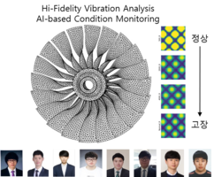
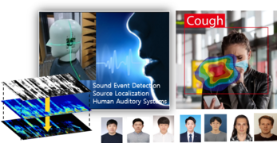
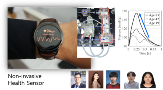
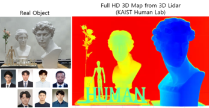

Lab Intro
Overview

- Lab Intro
- >
- Overview

연구목표
기계공학은 인류가 산업혁명을 일으켰던 원동력으로, 인간이 하는 일을 대신하는 정교한 기계의 설계와 제조에 뿌리를 두고 있습니다. 최근에는 인간의 육체적 노동의 대리자 역할을 초월하여 기계가 상황을 스스로 판단하고 작업할 수 있도록 지능화, 자율화되고 있습니다. 이와 같은 21세기 기계공학의 새로운 추세는 우리가 생활하는 사회속의 인간과 기계 간의 새로운 관계를 의미하며, 기계에게 인간처럼 환경을 인식하는 센싱의 수단과 복잡한 상황에 대한 이해와 결정의 프로세스를 요구하고 있습니다. 이와 같은 맥락에서, 인간-기계 상호작용 연구실 (Human-Machine iNteraction: HUMAN Lab)은 기계가 인간과 같은 입체적인 시각(3D), 음향, 진동의 센싱 수단과 이를 이용한 환경과 상황의 인식 수단(AI)을 갖도록 하여, 미래에 인간과 기계의 상호작용을 혁신할 수 있는 기술에 대해 관심을 갖습니다.
연구자
박용화 교수는 1999년 KAIST 기계공학과에서 박사학위를 받았으며 교수로 부임하기 전 삼성전자 종합기술원에서 13년이란 긴 시간 동안 재직한 독특한 산학(産學) 이력이 있습니다. 삼성종합기술원에서는 미래 센서분야의 기술을 연구했습니다. 2016년부터 KAIST 기계공학과 교수로 재직 중이며 인간-기계 상호작용 연구실(Human-Machine iNteraction Lab: HUMAN Lab)을 설립하여 이끌어 오고 있으며 인공지능연구소의 겸임교수로 재직중에 있습니다. 2023년 가을 기준 석사과정 9명, 박사과정 17이 Human Lab과 함께하고 있습니다.
연구주제
인간기계 상호작용 연구실(HUMAN LAB)은 진동, 음향, 3D정보 기반 센서 및 해석, 인식기술을 연구합니다. 그리고 이를 첨단 AI와 접목하여, 인간과 기계의 상태를 진단하고 Interaction 할 수 있는 첨단공학 주제를 연구합니다.
진동해석 및 상태진단 (Vibration Analysis & Condition Monitoring)
진동현상에 대한 깊은 이해와 해석기술을 연구하는 원천 기반기술 분야로, 이를 구조시스템의 진동해석과 로봇/자동화/제조분야 고장진단에 적용합니다.

• Vibration analysis of linear /nonlinear systems in time, frequency and modal domain• System identification and inverse problem
• Vibration signature-based condition monitoring
• Deep learning for dynamical system modeling
• Prognostics and Health Monitoring (PHM)
• High-fidelity digital twin
• FEM model updating / Experimental modal analysis
청각지능 및 음향인식 (Auditory Intelligence & Acoustic Recognition)
인간의 청각을 응용한 인공지능을 구현하여 휴머노이드로봇/자동화/제조업 분야에서 주변 상황을 인지하는 AI 기반 인공청각 연구를 수행합니다.

• Deep Sound Event Detection• Human auditory system
• Binaural sound event localization and detection for Humanoid Robot
• Acoustic signature-based condition monitoring and fault diagnosis
• Cocktail Party Problem: classification, localization and separation of sound
• Artificial ear for humanoid robots
인체진동 및 헬스센서 (Human Vibration & Health Sensors)
인체의 진동음향을 측정, 분석하여 건강상태를 진단하는 기술을 연구하며, 혈압, 혈당 등 건강지표의 비침습 센서를 개발합니다.

• Human vibration and sound for health monitoring applications• Non-invasive, wearable health sensors (blood pressure, diabetes, etc.)
• Coupled-field dynamic modeling and analysis of human body
• Deep operational learning for biodynamic modeling and bio-signal analysis
3차원 공간 인식 (3D Scene Recognition)
초소형, 고정밀 Lidar 센서와 스테레오 센서를 독자기술로 개발하고, 사람의 얼굴/행동인식, 로봇/제조분야/객체인식 등 AI기반 인지기술을 연구합니다

• High-resolution, robust, compact 3D LiDAR for humanoid robots and autonomous vehicles
• Stereo-vision and deep learning based high-precision depth measurement
• Human gesture / human face detection by 3D depth information
• Video motion magnification for non-contact measurements